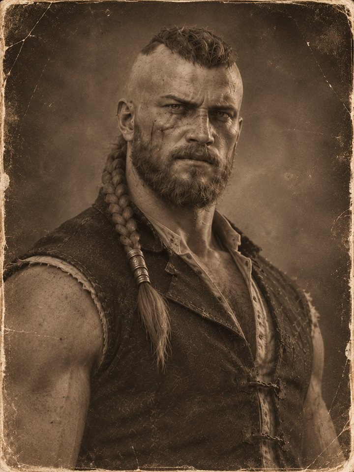
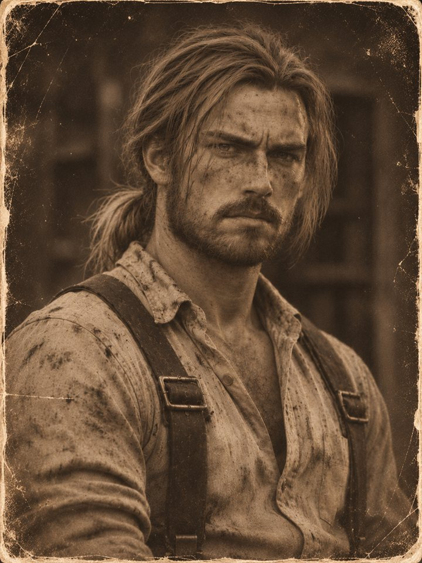
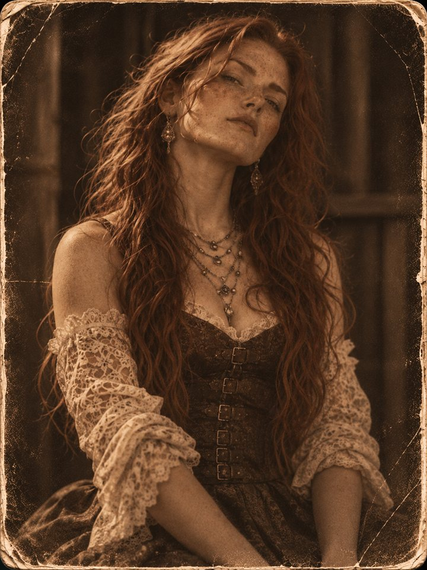
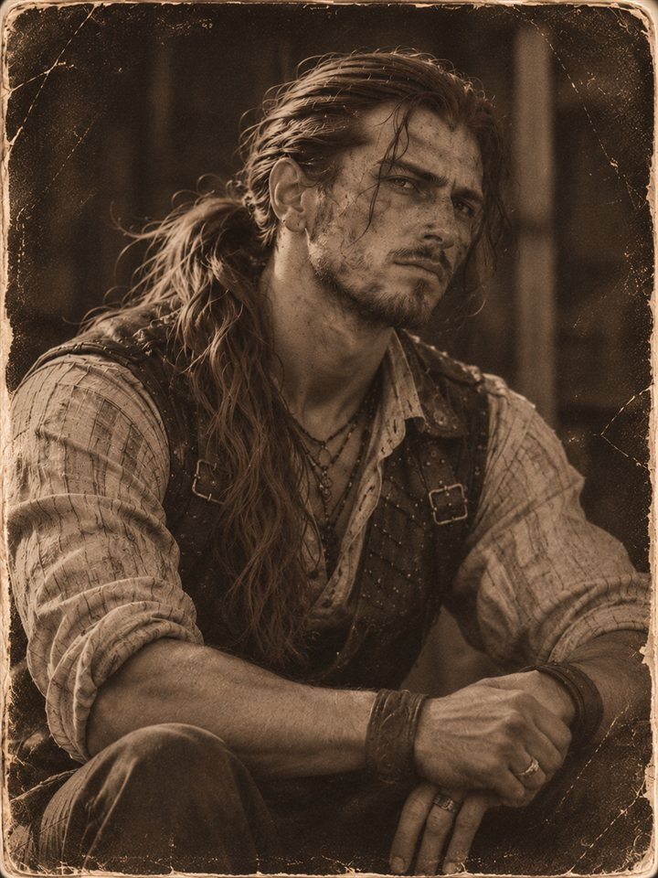
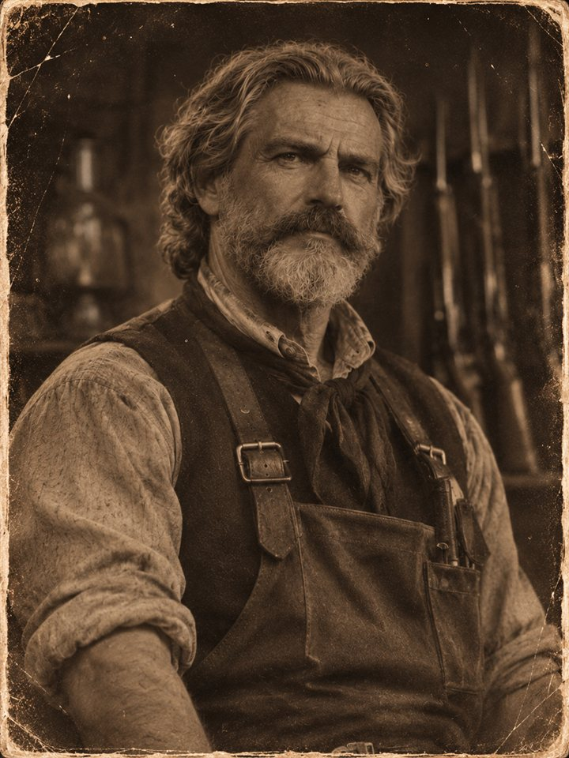

Ragnar Swanson
31 AÑOSEl hermano mayor y una de las figuras principales de la familia. Propietario de El Ojo de Odín junto a su hermano Modi.
VALENTINE · NEW HANOVER
«La confianza es nuestra mejor garantía»
En el corazón de Valentine nace una nueva etapa para un establecimiento dedicado al comercio de armamento y al servicio de sus habitantes.
El Ojo de Odín representa la continuidad de un oficio, el compromiso de una familia y la voluntad de ofrecer a cada cliente un trato basado en la seriedad, la experiencia y la confianza.
El Ojo de Odín no nace de la nada. Sus puertas son las de la antigua Armería de Valentine, un establecimiento que durante años atendió a los habitantes de la región bajo la mano de un armero experimentado: Caleb Whitmore.
Próximo a su retiro y sin un sucesor que pudiera tomar el relevo, Whitmore decidió buscar a alguien capaz de continuar con su negocio. Ragnar Swanson y Modi Swanson conocieron su situación a través de las relaciones comerciales y los contactos establecidos en la región.
Tras acercarse al propietario y mantener varias conversaciones, ambas partes llegaron a un acuerdo para la adquisición del establecimiento, incluyendo sus instalaciones, herramientas, equipamiento y las existencias acordadas.
El propósito nunca fue empezar desde cero, sino dar continuidad a un negocio con raíces en Valentine y abrir una nueva etapa bajo la administración de los Swanson.
Próximo a su retiro y sin sucesor, Caleb Whitmore busca quien continúe su oficio.
Ragnar y Modi conocen su situación a través de sus contactos comerciales en la región.
Instalaciones, herramientas, equipamiento y existencias acordadas pasan a manos de los Swanson.
Caleb Whitmore acompaña a la nueva administración durante unos tres meses.
Ragnar y Modi asumen plenamente la administración del establecimiento.
Durante este tiempo, Caleb Whitmore, antiguo propietario, permanecerá en la armería como asesor temporal. Su experiencia será la base sobre la que se levante la nueva etapa:
Finalizado este periodo, Ragnar y Modi asumirán plenamente la administración de El Ojo de Odín.
Una familia, dos ramas.
Los Swanson y los Einarsson no son dos casas que se limitan a comerciar juntas. Son dos ramas de una misma familia, unidas por vínculos de sangre y matrimonio, que con los años han levantado una familia extensa a través de sus relaciones, su convivencia y sus proyectos compartidos.
Su identidad hunde sus raíces principalmente en el Norte, con ascendencia escocesa. La tradición y la cultura nórdicas siguen muy presentes en sus costumbres y en la manera en que entienden la familia.

El hermano mayor y una de las figuras principales de la familia. Propietario de El Ojo de Odín junto a su hermano Modi.

Hermano menor de Ragnar. Comparte con él la propiedad y la dirección de El Ojo de Odín.

Hermana de Ragnar y Modi. Integrante de la familia Swanson.
La hermana menor. Fundadora de El Banquete de Odín, el establecimiento familiar situado en Valentine.

Integrante de la rama Einarsson. Trabaja en El Ojo de Odín, donde se ocupa de la atención al público y las ventas.
Ambas ramas comparten una identidad familiar construida a lo largo de generaciones, de vínculos y de proyectos. Esa unión se refleja, con discreción, en la identidad de El Ojo de Odín y en su emblema, que reúne los apellidos Swanson y Einarsson.
PROPIETARIO
31 años
Propietario de El Ojo de Odín junto a su hermano Modi. Participa en la dirección general, las decisiones comerciales, las negociaciones y la supervisión del establecimiento.
PROPIETARIO
27 años
Propietario de El Ojo de Odín junto a su hermano Ragnar. Participa en la dirección general, las decisiones comerciales, las negociaciones y la supervisión del establecimiento.
Ambos hermanos comparten a partes iguales la responsabilidad del negocio.
ATENCIÓN AL PÚBLICO Y VENTAS

ANTIGUO PROPIETARIO · ASESOR TEMPORAL
Durante los primeros meses de la nueva etapa, el veterano armero transmitirá sus conocimientos y facilitará la continuidad del establecimiento, acompañando a la nueva administración en su relevo.
Un comercio al servicio de rancheros, cazadores, viajeros y vecinos de la región.
Comercialización del armamento disponible en el establecimiento, de acuerdo con las existencias de la casa y la normativa comercial vigente.
Disponibilidad y comercialización de munición compatible con los productos ofrecidos en la armería.
Servicios de mantenimiento conforme a lo permitido y venta de productos destinados a la limpieza, conservación y cuidado del armamento.
Atención personalizada para orientar a cada comprador sobre los productos disponibles, sus características y su cuidado.
Gestión de solicitudes de productos que no se encuentren habitualmente en el establecimiento, según la disponibilidad y las posibilidades comerciales.
El Ojo de Odín atiende en persona, en el propio establecimiento. Consulte en el mostrador la mercancía disponible en cada momento.
Establecer una armería de confianza en Valentine, ofreciendo atención cercana, productos relacionados con la actividad armamentística y un servicio responsable para los habitantes y comerciantes de la región.
Convertir El Ojo de Odín en un establecimiento reconocido en New Hanover por su seriedad comercial, la confianza de sus clientes y sus relaciones con los distintos sectores de la comunidad.
Metas que la nueva administración se propone alcanzar con el tiempo.
El Ojo de Odín no pretende limitarse a la venta. Estas son las iniciativas que la casa se propone organizar para reunir a la comunidad en torno a su oficio.
Encuentros organizados para que los participantes practiquen la puntería y se familiaricen con el uso responsable del armamento.
Bajo supervisión, con condiciones previamente establecidas y las debidas medidas de seguridad.
Reuniones para cazadores y aficionados de la región. Un espacio para compartir experiencias, intercambiar conocimientos y estrechar lazos entre quienes comparten esta actividad.
Abiertos a cazadores veteranos y a quienes se inician en el oficio.
Encuentros de duelo bajo condiciones previamente acordadas, con participantes voluntarios, supervisión y medidas de seguridad.
Sujetos a la ley y a las condiciones establecidas para cada encuentro. Nunca enfrentamientos improvisados.
Una armería solo es tan fiable como su abastecimiento. Por ello, El Ojo de Odín buscará mantener una comunicación constante con posibles proveedores, con el fin de garantizar la disponibilidad de mercancía para sus clientes.
La gestión de pedidos y pagos se llevará con orden y rigor, en los libros de la casa, para que cada encargo pueda seguirse desde su solicitud hasta su llegada al mostrador.
Del primer trato con el proveedor hasta la reposición en el estante, cada paso queda anotado.
Búsqueda de posibles proveedores.
Contacto y presentación comercial de la casa.
Precios, cantidades y condiciones.
Gestión de los pedidos acordados.
Control de solicitudes y entregas.
Anotación de la mercancía recibida y vendida.
Control del género disponible.
Según la demanda de los clientes.
El Ojo de Odín desea establecer relaciones comerciales con los distintos sectores de New Hanover.
El Ojo de Odín propondrá a la oficina del sheriff de Valentine y a las autoridades correspondientes un convenio de colaboración destinado a fomentar el registro y el control responsable del armamento presente en la región. La propuesta contempla:
Llevar un registro comercial de las armas vendidas por el establecimiento y facilitar la información correspondiente a las autoridades, conforme a lo acordado.
Ofrecer a los ciudadanos la posibilidad de declarar y registrar armas que ya poseían antes de acudir a la armería.
Facilitar la identificación del armamento registrado ante situaciones de pérdida, robo o investigaciones.
Mantener comunicación con los sheriffs y colaborar cuando sea necesario, respetando siempre sus competencias.
Promover la tenencia responsable y el registro adecuado del armamento entre los vecinos de la región.
Nota. Este convenio es una propuesta que aún debe ser presentada y aceptada por las autoridades; no existe acuerdo firmado a día de hoy. El Ojo de Odín no ostenta autoridad policial ni facultad alguna para validar oficialmente la legalidad de las armas. Toda autorización y actuación oficial corresponde a las autoridades competentes.
La prioridad de la casa es el trato en persona. Los ciudadanos pueden acudir directamente a la armería para recibir atención, consultar los productos disponibles y realizar sus solicitudes.
Detrás del mostrador encontrará cercanía, seriedad y el consejo de quienes conocen el oficio.
Para quienes se encuentren lejos de Valentine, la casa atiende la correspondencia por telegrama para:
La disponibilidad del mostrador puede variar según las obligaciones de la casa. Para asuntos que requieran la presencia de los propietarios, se recomienda concertar cita por telegrama.
«La confianza es nuestra mejor garantía»
Una nueva etapa comienza en Valentine. Con la experiencia de quienes nos precedieron y el compromiso de quienes toman ahora las riendas, El Ojo de Odín abre sus puertas con la intención de construir relaciones duraderas y ofrecer a cada cliente un servicio digno de su confianza.